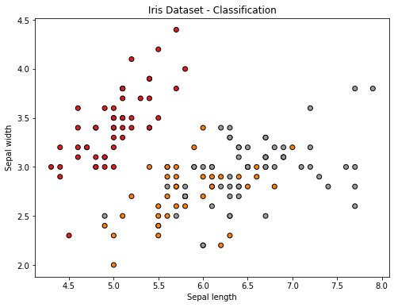

Classification is a cornerstone of machine learning, where the objective is to categorize data into predefined classes. It’s a critical tool for pattern recognition, often used in applications such as email filtering, language detection, and medical diagnosis.
The Definition
In machine learning, classification refers to the process of predicting the category of a given data point. It’s a form of supervised learning where the model is trained on a labeled dataset.
Real-World Applications
Email Filtering: Classifying emails into spam and non-spam. Medical Diagnosis: Identifying diseases based on patient records. Financial Analysis: Detecting fraudulent transactions. ## The Types Classification tasks are generally divided into binary, multi-class, and multi-label classifications.
Binary Classification
The simplest form of classification where there are only two classes. For example, an email is either spam (positive class) or not spam (negative class).
Multi-Class Classification
Involves categorizing data into more than two classes. For example, sorting animals into categories like mammals, birds, and reptiles.
Multi-Label Classification
A scenario where each data point can belong to multiple classes. For example, a movie can be both a comedy and a drama.
The Algorithms
Several algorithms are commonly used for classification tasks, each with its strengths and weaknesses.
Decision Trees
Decision Trees classify instances by sorting them down the tree from the root to some leaf node, which provides the classification.
Support Vector Machines (SVM)
SVMs are effective in high-dimensional spaces and are versatile as they can be used for both classification and regression tasks.
Naive Bayes
Based on Bayes’ theorem, Naive Bayes classifiers work well in many real-world situations, such as document classification and spam filtering.
Neural Networks
Neural Networks are particularly well-suited for complex classification problems, such as image and speech recognition.
Python Implementation: Classifying the Iris Dataset
The Iris dataset contains 150 instances of iris plants, classified into three species based on the size of their sepals and petals.
# Import necessary librariesimport matplotlib.pyplot as pltfrom sklearn import datasets# Load the Iris datasetiris = datasets.load_iris()X = iris.data[:, :2] # We take only the first two features for simplicityy = iris.target# Visualize the dataplt.figure(figsize=(8, 6))plt.scatter(X[:, 0], X[:, 1], c=y, cmap=plt.cm.Set1, edgecolor='k')plt.xlabel('Sepal length')plt.ylabel('Sepal width')plt.title('Iris Dataset - Classification')plt.show()

Model Training and Evaluation
Preparing the Data
Before training the model, we need to split our data into a training set and a test set. This allows us to evaluate our model on unseen data.
from sklearn.model_selection import train_test_split# Splitting the dataset into the Training set and Test setX_train, X_test, y_train, y_test = train_test_split(X, y, test_size=0.3, random_state=42)
Training the KNN Model
KNN works by finding the nearest data points in the training set to a given data point in the test set and then classifying the test data point into the majority class among those nearest neighbors.
from sklearn.neighbors import KNeighborsClassifier# Initializing the KNN Classifierknn = KNeighborsClassifier(n_neighbors=3)# Fitting the model with the training dataknn.fit(X_train, y_train)
KNeighborsClassifier(n_neighbors=3)
Evaluating the Model
After training our model, we evaluate its performance using the test set. Common evaluation metrics for classification models include accuracy, precision, recall, and the confusion matrix.
from sklearn.metrics import classification_report, confusion_matrix, accuracy_score# Predicting the Test set resultsy_pred = knn.predict(X_test)# Confusion Matrixprint("Confusion Matrix:")print(confusion_matrix(y_test, y_pred))# Classification Reportprint("\nClassification Report:")print(classification_report(y_test, y_pred))# Accuracy Scoreprint("Accuracy:", accuracy_score(y_test, y_pred))plt.figure(figsize=(8, 6))plt.scatter(X_test[:, 0], X_test[:, 1], c=y_pred, cmap=plt.cm.Set1, edgecolor='k')plt.xlabel('Feature 1')plt.ylabel('Feature 2')plt.title('KNN Classifier - Test Set')plt.show()
We’ve explored the fundamental concept of classification in machine learning, illustrated by a practical example using the Iris dataset. We’ve seen how different types of classification tasks can be approached and explored some key algorithms that are commonly used in this domain.
The example with the K-Nearest Neighbors algorithm on the Iris dataset demonstrated not just the process of training a machine learning model but also the crucial steps of evaluating its performance. The insights gained from this exercise are invaluable in understanding how classification models work and how they can be applied to real-world problems.